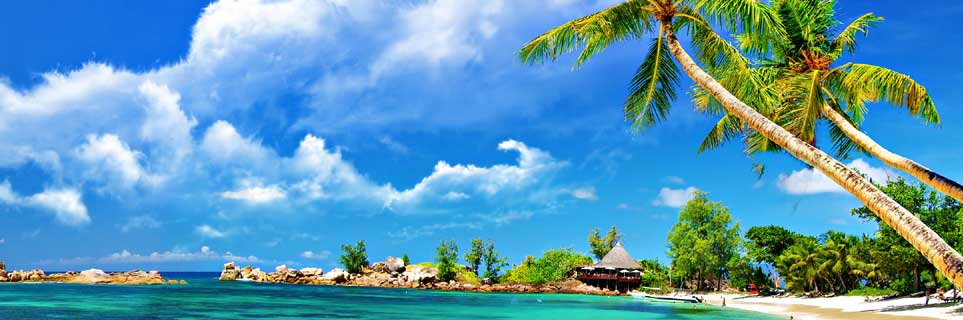
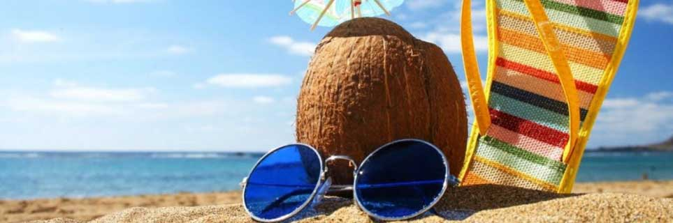
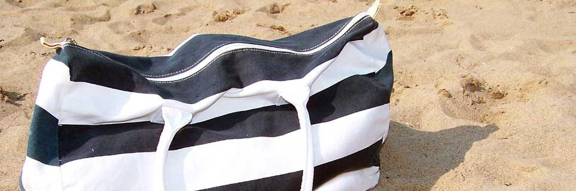
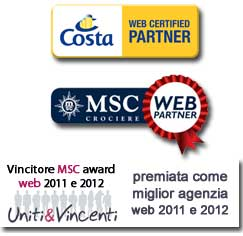

- 
- 
- 


Msc awards 2011 e 2012
Carissimi clienti di Fersina viaggi, questa sezione ce la vogliamo proprio dedicare! Fersina Viaggi Winner Awards 2011 e Msc Awards 2012 - MSC WEB
In occasione degli MSC Awards (dove vengono premiate le migliori agenzie d’Italia), tenutisi il 1 febbraio 2012 a bordo di MSC Magnifica, ormeggiata per l’occasione al varco Isonzo di Venezia, FERSINA VIAGGI è risultata la miglior agenzia web per le vendite dell’anno 2011.
Fersina Viaggi Winner Awards 2011 e Msc Awards 2012 - MSC WEB
In occasione degli MSC Awards (dove vengono premiate le migliori agenzie d’Italia), tenutisi il 1 febbraio 2012 a bordo di MSC Magnifica, ormeggiata per l’occasione al varco Isonzo di Venezia, FERSINA VIAGGI è risultata la miglior agenzia web per le vendite dell’anno 2011.Il riconoscimento è stato conferito direttamente dal Direttore Generale di MSC dott. Domenico Pellegrino nelle mani del nostro rappresentante, davanti ad una platea di oltre 1500 agenti di viaggio provenienti da tutta Italia.
Stesso premio vinto l'anno successivo a bordo di MSC Poesia ormeggiata a Trieste il 7 novembre 2012 dove FERSINA VIAGGI è risultata la miglior agenzia web per le vendite dell’anno 2012.
Il riconoscimento è stato conferito direttamente dal Direttore Marketing di MSC dott. Leonardo Massa e dall'area Manager di Venezia dott. Massimo Bertoldero nelle mani dei nostri rappresentanti, davanti ad una platea di oltre 1500 agenti di viaggio provenienti da tutta Italia.
A voi tutti un grazie per la fiducia che ci avete accordato! A noi tutti un’incitazione a continuare sulla strada della professionalità, che ci ha consentito di salire la piramide fino a raggiungere la vetta come numero di cabine vendute sul mercato del web italiano!